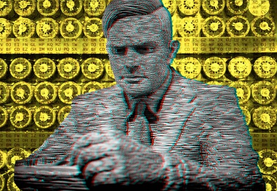

¿Quién fue Alan Turing?
Fue un matemático, lógico y criptógrafo británico, considerado el padre de la informática y la inteligencia artificial.
Durante la Segunda Guerra Mundial lideró el equipo que descifró los códigos de la máquina alemana Enigma en Bletchley Park, contribuyendo decisivamente a acortar la guerra.

¿Cuándo fue utilizada la máquina Enigma? ¿Qué hacía?
Fue utilizada por los alemanes durante la Segunda Guerra Mundial. Era una máquina electromecánica de rotores que cifraba las comunicaciones militares mediante sustituciones polialfabéticas variables, imposibilitando la lectura directa de los mensajes.
¿Cada cuánto cambiaban las combinaciones de la máquina Enigma los alemanes?
Los alemanes cambiaban las claves con alta frecuencia: mensualmente al principio de la guerra, pero con mayor frecuencia a medida que avanzaba el conflicto. Se documenta que llegaron a cambiarlas hasta tres veces al día y, en algunos períodos, cada 24 horas.
Según Turing, ¿qué puede vencer a una máquina?
Según Turing, solo otra máquina puede vencer a una máquina. Su planteamiento era que resultaba ineficaz intentar descifrar Enigma con esfuerzo humano, y que se requería una máquina diseñada específicamente para superar a la máquina enemiga
Según el cálculo de Hugh Alexander, ¿cuántas posibilidades tiene la máquina Enigma?
El número de configuraciones posibles era astronómico: aproximadamente 3.28 × 10^114 posibilidades distintas de codificación, resultado de combinar las conexiones del tablero de clavijas con los alfabetos generados por los rotores.
¿Cómo quería Turing que evolucionara su máquina universal (Christopher)?
Turing quería que su máquina evolucionara hasta convertirse en una máquina universal capaz de realizar cualquier cálculo, imitando el funcionamiento del cerebro humano. La idea era que la máquina no solo descifrara Enigma, sino que pudiera procesar cualquier tipo de información de manera general.
¿las máquinas pueden pensar como los humanos? ¿Qué pensaba Turing al respecto?
Las máquinas pueden pensar como humanos pero, siempre suelen estar controladas por uno. Turing, en 1950, propuso el Juego de la Imitación para reemplazar la pregunta "¿pueden las máquinas pensar?" por una prueba operativa: si un interrogador no puede distinguir a una máquina de un humano en una conversación, entonces la máquina exhibe inteligencia. Turing anticipó que las máquinas eventualmente podrían engañar a los humanos en este juego.
¿Qué es hoy conocido como el Test de Turing?, ¿y qué inteligencia artificial pudo engañar al juez en 2014?
El Test de Turing evalúa la capacidad de una máquina para exhibir comportamiento inteligente indistinguible del humano en conversación. En 2014, el programa Eugene Goostman (que simulaba ser un niño de 13 años) logró engañar al 33% de los jueces en un evento en la Royal Society de Londres, superando el umbral del 30% establecido como criterio de éxito.
Referencias de la pelícucla "El Código Enigma":
- El cianuro en el laboratorio: Alan Turing murió en 1954 por envenenamiento con cianuro. La versión oficial sostiene que se suicidó mordiendo una manzana impregnada de cianuro, aunque algunos expertos como Jack Copeland cuestionan esta narrativa y sugieren que pudo ser accidental, dado que Turing almacenaba sustancias químicas en su laboratorio.
- Las manzanas y Steve Jobs: Existe una leyenda que afirma que el logo de Apple (una manzana mordida) es un homenaje a Turing. Sin embargo, Steve Jobs nunca confirmó esto. El diseñador Rob Janoff declaró que la mordida fue añadida simplemente para que la fruta no se confundiera con una cereza y para hacer un juego visual con la palabra "byte" (mordida en inglés es "bite")
¿Porque Turing decidió acabar con su vida? ¿El gobierno ingles actuó correctamente?
Seguramente, Turing, no pudo aguantar el medicamento que le ofreció el gobierno inglés y debido a eso al cabo de un tiempo se cansó y decidió acabar con su vida. El gobierno ingles actuó bien, aunque Turing fuera un "Héroe" sigue infringiendo la ley.